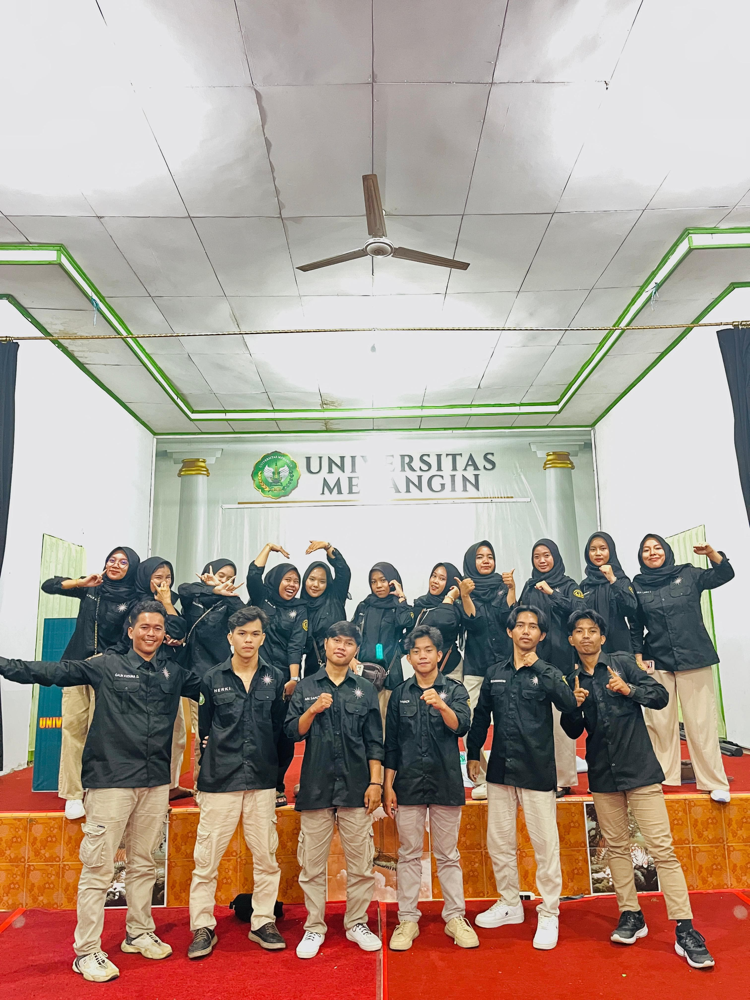

Tentang Kami
UKM Pencak Silat Universitas Merangin merupakan wadah pengembangan diri mahasiswa yang berfokus pada pelestarian dan pengembangan seni bela diri tradisional pencak silat. Kami mengedepankan nilai sportivitas, persaudaraan, prestasi, dan cinta budaya Indonesia.
- Berdiri: 23 Oktober 2024, berawal dari inisiatif mahasiswa yang peduli akan budaya dan olahraga.
- Dasar hukum: SK Rektor & AD/ART organisasi.
- Anggota: Mahasiswa lintas fakultas, terbuka untuk semua yang ingin berkembang.
Visi
Menjadi pusat pembinaan mahasiswa yang berprestasi dan berkarakter melalui pencak silat serta pelestarian budaya di lingkungan Universitas Merangin.
Misi
- Mendorong latihan rutin dan peningkatan teknik, fisik, serta mental anggota.
- Aktif melestarikan dan memperkenalkan pencak silat sebagai warisan budaya.
- Menumbuhkan solidaritas, sportivitas, dan jiwa kepemimpinan.
- Mengukir prestasi di berbagai ajang, baik tingkat kampus maupun eksternal.
Program Kegiatan
- Open Recruitment: Seleksi anggota baru setiap tahun.
- Latihan Rutin: Jadwal teratur dengan pelatih kompeten.
- Pelatihan & Edukasi: Untuk anggota baru dan masyarakat sekitar.
- Lomba & Penampilan: Kompetisi dan showcase di berbagai event.
- Kegiatan Sosial: Baksos, pengabdian masyarakat, dan berbagi takjil.
2024
Tahun Berdiri
30+
Anggota Aktif
4
Divisi Aktif
Kontak & Informasi:
"Bersama UKM Pencak Silat Universitas Merangin, mari lestarikan budaya dan ukir prestasi!"